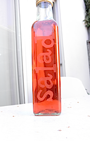
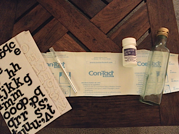
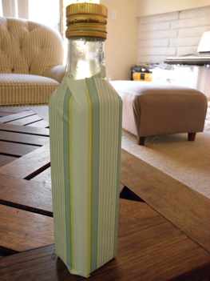
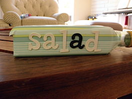
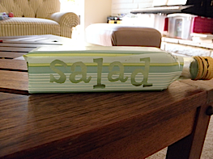
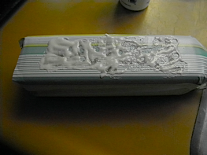
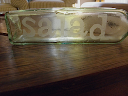
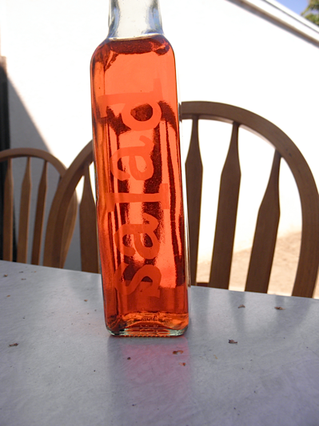

8-28-2012
Etched Glass Salad Dressing Bottle
My husband I and go through a lot of salad. I mean enough to buy the Costco sized packs of lettuce, cheese, and croutons. I was thinking about how neat it would be if I could learn to make my own salad dressing, which will be the focus in my next recipe post. In the mean time, I decided what I really needed an easy pour container to hold my homemade salad dressing. As luck would have it I just used the last of my Oil Olive which was held in a bottle with a fancy pour spout. So, in true upcycle fashion, I decided to spice up the bottle and give it a new life as my "salad dressing bottle". Enjoy, Be Inspired, and Create some Upcycled Beauty for yourself!
What You Will Need:
- Old Olive Oil Bottle -OR - Any Bottle with a Pour Spout
- Contact Paper
- Letter Stickers
- Exacto Knife
- Armour Etch -OR- Glass Etching Cream
- Paint Brush
- Protective Gloves
Directions:
Remove any labeling and stickiness from your bottle. Once your bottle is clean and dry apply the contact paper to the side you will be etching. Be sure to press out any bubbles in the contact paper as best as you can so you don't get any leaks in the etch.
Next apply the stickers to the contact paper. I choose to spell salad, but you could use any word you'd like.
Use your exacto knife to trace around the edges of the letters, essentially cutting the letters out of the contact paper. Once you've traced around the sticker you can remove it and use your exacto knife to lift the cut out letters.
Now it's time to use the Armour Etch. Note: Please follow all the safety precautions and directions on the Armour Etch or any glass etching cream you use. Following the directions on the armour etch, put on safety gloves and use the paint brush to apply a liberal amount of etching cream, covering the letters. Rinse off the paint brush and allow the cream to set for 60 seconds. Immediately rinse the entire bottle off in the sink. Wipe the bottle dry and remove the contact paper.
Bringing new life to old and would-be discarded items always makes my day just a little bit brighter! Enjoy your new bottle, and get geared up for my first ever salad dressing recipe!
Click Here for more great craft ideas!